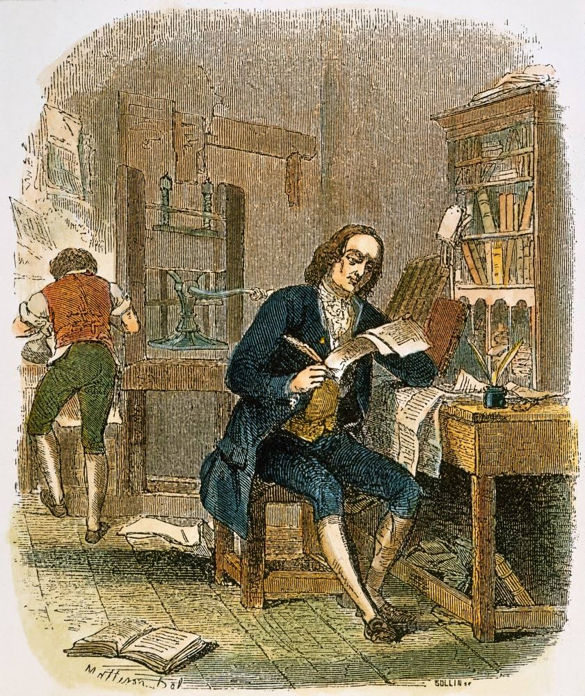

Estudios de Benjamin Franklin
Formación Autodidacta
A pesar de su inmensa sabiduría, la educación formal de Benjamín Franklin fue muy limitada. Asistió a la Boston Latin School apenas un par de años debido a la situación económica de su familia. Sin embargo, su verdadera educación fue completamente autodidacta. Franklin devoraba cualquier libro que llegaba a sus manos, aprendió a redactar con precisión analizando ensayos periodísticos y estudió varios idiomas por su cuenta, incluyendo francés, italiano, español y latín. Su curiosidad insaciable lo llevó a convertirse en uno de los mentes más brillantes de su época.
